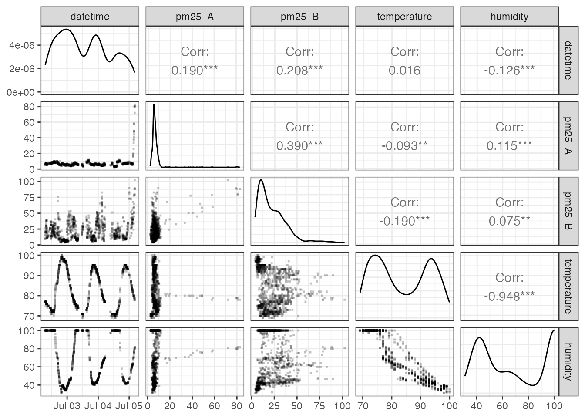
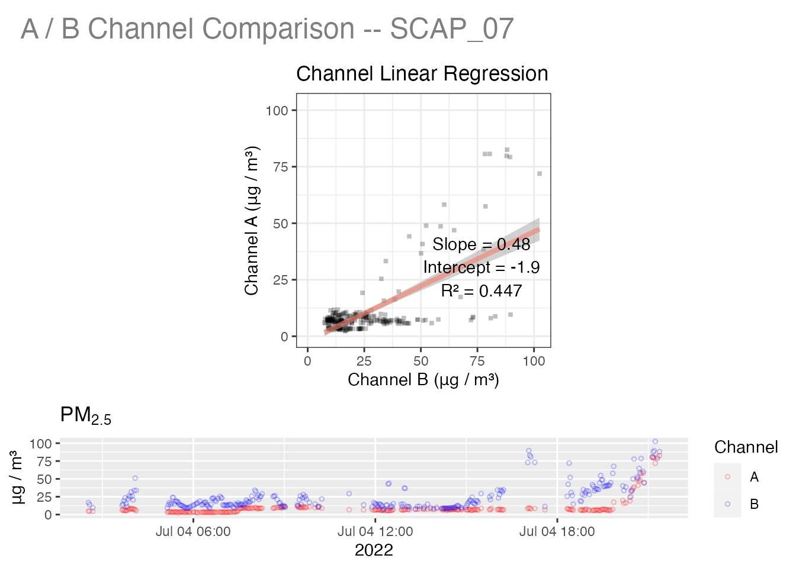

An Introduction to PurpleAir TimeSeries Data
Mazama Science
2019-04-19
Source:vignettes/pat_introduction.Rmd
pat_introduction.RmdTime series data provides a minute-by-minute database structure for transforming and analyzing PurpleAir sensor data. This vignette demonstrates an example analysis of an individual monitor located in Seattle, Washington over a two-month duration in which the Pacific Northwest experienced hazardous air-quality conditions caused by wildfires in British Columbia, Canada.
Disclaimer: It is highly recommended that you read vignettes/pas_introduction.Rmd before beginning this tutorial.
Loading PurpleAir Timeseries data
PurpleAir sensor readings are uploaded to the cloud every 120 seconds where they are stored for download and display on the PurpleAir website. After every interval, the synoptic data is refreshed and the outdated synoptic data is then stored in a ThingSpeak database. In order to access the ThingSpeak channel API we must first load the synoptic database, which provides access tokens for each PurpleAir sensor – accessed by the monitor of interests label.
library(MazamaCoreUtils)
library(AirSensor)
pas <- pas_load()
pat <- pat_createNew(pas, "Seattle", startdate = 20180701, enddate = 20180901)Notice that when passing our synoptic dataframe “pas” to pat_createNew(), we also supply a unique identification label and date-interval. In this case, our monitor-of-interest (MOI) is a sensor named “Seattle” and our dates-of-interest are 2018-07-01 to 2018-09-01.
Note: You must provide a label to pat_createNew() in order to supply ThingSpeak with the necessary metadata to access the sensors database. A time range on the other hand is optional; by default not providing pat_createNew() with a start and end date will return the most recent week of time series data.
The PurpleAirTimeseries (“pat”) Data Model
Let’s begin by exploring the attributes of the dataframe returned by the pat_createNew() function.
## [1] "meta" "data"pat contains two dataframes, meta and data.
The meta dataframe contains metadata of the selected PurpleAir sensor – this includes non-time series data such as location information, labels, etc. The data dataframe contains datestamped sensor readings of PM2.5, temperature, humidity, and other pertinent sensor data.
We’ll start by plotting PurpleAir’s raw sensor data. We can quickly display the time series data by using pat_multiplot() and passing in our raw pat and desired plot type (“all” sensor data).

Exploring Time Series Data
Our pat dataframe spans two months. While this provides a great overview of PM2.5, it is unwieldy to analyze if we are only interested in anomalous air quality. We can use pat_filterDate() to subset our pat dates. In this case, we’ll reduce our time range to 2018-08-01 - 2018-09-01.
pat_august <-
pat %>%
pat_filterDate(startdate = 20180801, enddate = 20180901)
pat_august %>%
pat_multiplot(plottype = "pm25_over")
We can look for correlations in the raw data with pat_scatterplot(). When a sensor is properly functioning, the only correlations will be a strong positive one between between the A and B channels (pm25_A:pm25_B) and a strong negative one between temperature and humidity.

Outlier Detection
Our pat_august “pat” object displays some intermittent sensor errors that appear as spikes in the data. In order to identify and remove PM2.5 outliers like these we can use pat_outliers(). By default, this function will create a plot of the raw data with outliers marked with a red asterisk. It can also be used to replace outliers with window median values.

A/B Channel Comparison
Now that we have a filtered dataset we can subset the data further and examine it in more detail. The pat_internalFit() function will compare PM2.5 data from the A and B channels to verify that the sensor is functioning properly.
one_week <-
pat_august %>%
pat_filterDate(startdate = 20180813, days = 7)
# Channel A/B comparison
one_week %>%
pat_internalFit()
The high R2 value indicates that the two channels are highly correlated while a slope of ~0.9 suggests a slight relative bias in the measurements. (Perfect alignment would have a slope of 1.0.)
Comparison with Federal Monitors
For locations near federal monitors that are part of the USFS Monitoring site, we can also compare the sensor data with hourly data from a federal monitor

Overall, this is an excellent fit with the PurpleAir sensor capturing the temporal evolution of the wildfire smoke event impacting Seattle. The sensor data is biased a little high relative to the monitoring data but the much higher temporal resolution of the sensor provides a rich dataset to work with.
This package contains many additional functions for working with PurpleAir data and users are encouraged to review the reference documentation.
Happy Exploring!
Mazama Science